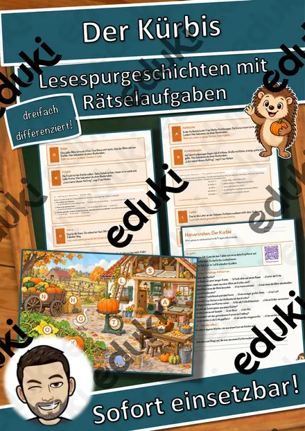
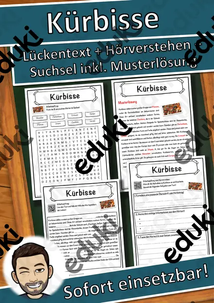
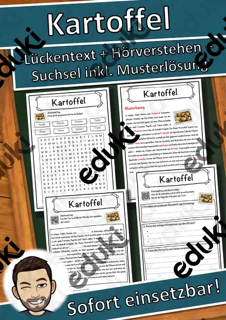
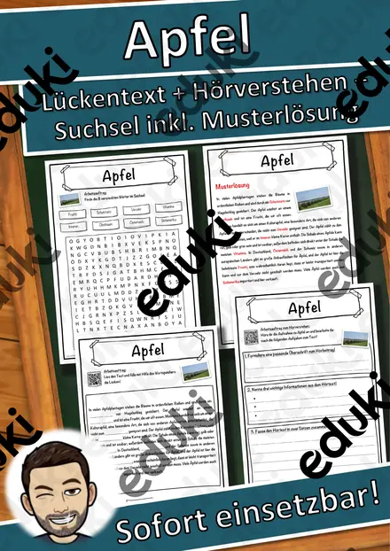
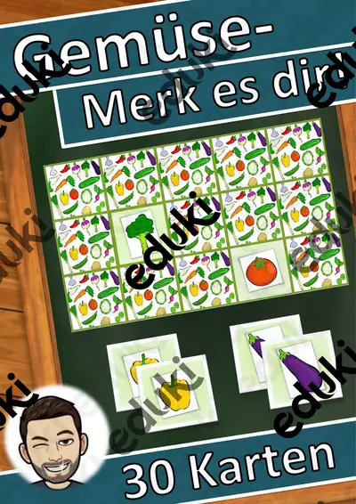

Obst, Gemüse und Ernte: Arbeitsblätter für Klasse 1–4 (Sachunterricht)
Obst und Gemüse verbinden Sachunterricht, Ernährungsbildung und Sprache. Kinder sortieren nach Wachstumsort, Erntezeit und Verwendung und lernen, woher Lebensmittel kommen.
Im Unterricht begegnen den Lernenden zuerst Obstsorten und Gemüsearten. Wer weitergeht, behandelt Erntezeit, Vitamine, Anbau sowie Regional und saisonal.
Die Lehrpläne der Länder sehen das Thema im Fach Sachunterricht vor, in der Regel in der Grundschule. Als Ziel gilt: die Schülerinnen und Schüler benennen heimisches Obst und Gemüse und ordnen es der passenden Jahreszeit zu.
Eine Reihe zu Obst, Gemüse und Ernte lässt sich so gliedern: erst Obstsorten erarbeiten, dann Gemüsearten anwenden, später Vitamine und Anbau vertiefen. Zu jedem Material gehört eine Musterlösung, die Korrektur und Selbstkontrolle erleichtert. Leistungsstarke und schwächere Lesende erhalten über die Lesespurgeschichten Texte in drei Stufen.
Zum Thema finden Sie 23 Materialien, unter anderem Wortgitter-Suchsel: Obst und Gemüse, Wort-Bild-Karten: Obst und Gemüse und Ich habe, wer hat? Obst und Gemüse, verteilt auf 2 Lesespurgeschichten, 2 Lesespaziergänge, 1 Bastelvorlage und 13 Lückentexte mit Hörverstehen in Klasse 1–5. Eine Verkostung mit geschlossenen Augen macht Geschmack zum Gesprächsanlass und füllt den Wortschatz ganz nebenbei.
Das gehört zum Thema
Passende Arbeitsblätter und Materialpakete

Lesespaziergang DaZ: Gemüse – Wortschatz mit Rätseln, 3-fach differenziert (Klasse 1–4)

Der Kürbis von innen – Klapp-Kürbis basteln und beschriften, 3-fach differenziert (Halloween/Herbst, Klasse 1/2)

Lesespaziergang: Obst und Gemüse im Winter – 3-fach differenziert (★/★★/★★★), Klasse 2–4

Der Kürbis – Lesespurgeschichte mit Rätselaufgaben (Klasse 3)

Die Kartoffel – Lesespurgeschichte mit Rätselaufgaben (Klasse 5)

Paprika Lückentext mit Wortspeicher Hörverstehen und Suchsel

Orange Lückentext mit Wortspeicher Hörverstehen und Suchsel

Obst Lückentext mit Wortspeicher Hörverstehen und Suchsel

Gurke Lückentext mit Wortspeicher Hörverstehen und Suchsel

Kürbisse Lückentext mit Wortspeicher Hörverstehen und Suchsel

Erdbeeren Lückentext mit Wortspeicher Hörverstehen und Suchsel

Kirsche Lückentext mit Wortspeicher Hörverstehen und Suchsel

Kartoffel Lückentext mit Wortspeicher Hörverstehen und Suchsel

Birnen Lückentext mit Wortspeicher Hörverstehen und Suchsel

Karotte Lückentext mit Wortspeicher Hörverstehen und Suchsel

Gemüse Lückentext mit Wortspeicher Hörverstehen und Suchsel

Bananen Lückentext mit Wortspeicher Hörverstehen und Suchsel

Apfel Lückentext mit Wortspeicher Hörverstehen und Suchsel

Wortgitter-Suchsel: Obst und Gemüse – Wortgitter – Klasse 1–4

Wort-Bild-Karten: Obst und Gemüse – Wort-Bild-Karten – Klasse 1–4

Ich habe, wer hat? Obst und Gemüse – Lese-Schleifen – Klasse 1–4

Wortspiele: Sag es nicht! Obst und Gemüse – Klasse 2–4

Gemüse - Merk es dir!
Häufige Fragen
Für welche Klassenstufe passen die Arbeitsblätter zu Obst, Gemüse und Ernte?
Der Schwerpunkt liegt auf Klasse 5; insgesamt deckt die Auswahl (23 Titel) Klasse 1–5 ab. In der Beschreibung jedes Materials steht die empfohlene Stufe.
Welche Inhalte decken die Materialien zu Obst, Gemüse und Ernte ab?
Die Materialien arbeiten an Obstsorten, Gemüsearten und Erntezeit und gehen dann weiter zu Vitamine, Anbau und Regional und saisonal. Vorab lohnt ein Blick in den Lehrplan des eigenen Bundeslandes.
Wie setze ich Obst, Gemüse und Ernte im Unterricht ein?
Eine Verkostung mit geschlossenen Augen macht Geschmack zum Gesprächsanlass und füllt den Wortschatz ganz nebenbei. So entsteht aus den Blättern eine kleine Einheit, die sich auf zwei bis drei Stunden verteilen lässt.
Mehr Material nach Fach und Klasse
Verwandte Lehrplanthemen
- Halloween (Sachunterricht, Klasse 2–6)
- Jahreszeiten (Sachunterricht, Klasse 1–4)
- Bauernhof und Nutztiere (Sachunterricht, Klasse 1–4)
- Berufe und Berufswahl (Sachunterricht, Klasse 1–10)
- Dinosaurier und Urzeit (Sachunterricht, Klasse 1–5)